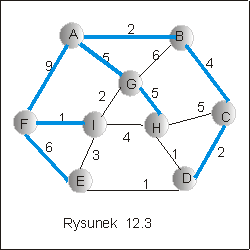
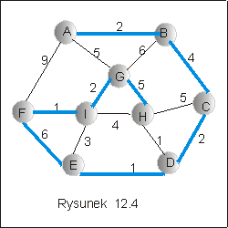

| « poprzedni punkt | nastêpny punkt » |
W tym punkcie wrócimy na chwilê do
znanych nam ju¿ algorytmów
przegl±dania grafu metod± "wszerz" BFS i "w g³±b" DFS, por. wyk³ad VII
p1 . Wykorzystamy, je najpierw do zbadania, czy dany graf
niezorientowany jest spójny, a nastêpnie do budowy drzewa rozpinaj±cego
grafu.
Szkic algorytmu BFS
1.W³ó¿ do kolejki q wybrany wierzcho³ek grafu i zamarkuj go.
2. Dopóki kolejka q nie jest pusta :
Wez pierwszy
element kolejki q.
Dopisz
do kolejki wszystkie wierzcho³ki z nim incydentne, o ile nie by³y
jeszcze zamarkowane i
ka¿dy z nich
zamarkuj.
Usuñ pierwszy
element kolejki q.
Idea przegl±dania grafu metod± DFS "w g³±b" polega na rekurencyjnym
odwiedzaniu wierzcho³ków coraz bardziej odleg³ych od wierzcho³ka
pocz±tkowego, wzd³u¿ jednej ¶cie¿ki, tak daleko jak to jest mo¿liwe.
Je¶li kontynuacja nie jest mo¿liwa, wracamy do poprzedniego
wierzcho³ka, wybieramy jaki¶ nieodwiedzony wierzcho³ek z jego listy
incydencji i powtarzamy postêpowanie.
Szkic algorytmu DFS
1.Zaznacz wybrany wierzcho³ek jako odwiedzony.
2. Dla ka¿dego wierzcho³ka z listy incydencji wybranego wierzcho³ka:
Je¶li wierzcho³ek nie by³ jeszcze zamarkowany, to
zastosuj rekurencyjnie procedurê odwiedzania do tego wierzcho³ka.
Przyk³ad 2.1
Koszt
Koszt postêpowania w obu algorytmach jest podobny. Dla ka¿dego
wierzcho³ka grafu przegl±damy jego listê incydencji. W przypadku BFS,
ka¿dy wierzcho³ek mo¿e byæ co najwy¿ej raz wpisany do kolejki, bo po
wpisaniu markujemy go jako odwiedzony. W przypadku metody "w g³±b",
procedurê DFS wywo³uje siê rekurencyjnie co najwy¿ej raz dla ka¿dego
wierzcho³ka, gdy¿ wywo³uje siê j± tylko dla wierzcho³ków
niezamarkowanych, a ka¿de wywo³anie DFS powoduje zamarkowanie
wierzcho³ka bêd±cego argumentem procedury. Pêtle w obu algorytmach s±
zatem skoñczone. Poniewa¿, w najgorszym razie, przegl±damy
wszystkie krawêdzie grafu., zatem koszt przegl±dania mo¿na
w obu przypadkach oszacowaæ przez O(|V| + |E|), gdzie V jest zbiorem
wierzcho³ków, a E zbiorem krawêdzi grafu.
Zwróæmy uwgê, ¿e postêpownie opisane w
metodach BFS i DFS nie musi koniecznie spowodowaæ
odwiedzenia wszystkich wierzcho³ków grafu. Je¿eli w danym
grafie s±
wierzcho³ki, nie po³±czone ¿adn± drog±, to zaczynaj±c odwiedzanie
grafu od jednego z nich, nigdy nie dojdziemy do drugiego.
Odwrotnie,
je¿eli przechodzenie grafu metod± BFS lub DFS nie spowoduje odwiedzenia
wszystkich wierzcho³ków grafu, to tylko dlatego, ¿e miêdzy jakimi¶
wierzcho³kami grafu nie istnieje droga, tzn. s± takie
wierzcho³ki, ¿e
jeden z nich nie jest osi±galny z drugiego. Wynika st±d, ¿e algorytmy
BFSi DFS mo¿na u¿ytæ do badania spójno¶ci grafu: je¶li po
zakoñczeniu
algorytmu wszystkie wierzcho³ki by³y odwiedzone, to graf jest spójny,
je¶li istniej± jeszcze nieodwiedzone wierzcho³ki, to graf nie jest
spójny.
| DFS |
(v : integer){ |
|
| m[v] := true; x := Tab[v]; |
||
| while
(not x = null) do |
//przegl±damy listê incydencji
wêz³a v |
|
| w :=
x.val; |
||
| if (m[w] = false) then DFS(w) fi |
// o ile w nie by³ odwiedzony |
|
|
x := x.next; |
//wywo³ujemy rekurencyjnie DFS |
|
| od; |
||
| result := true; |
// badamy, czy wszystkie
wierzcho³ki |
|
| for
i := 1 to n do result :=m[i] and result; od; |
//by³y zamarkowane |
|
| } |
Algorytm BFS - Badanie spójno¶ci
grafu
| BFS |
(v : integer){ |
|
| q := in(v,q) ; |
||
| while
(not empty(q)) do |
||
| v :=
first(q); q := out(q); |
||
| x := Tab[v]; | ||
| while (not x= null) do |
//przegl±damy listê incydencji wêz³a v | |
|
w := x.val; |
||
| if
(m[w] = false) then |
// o ile w nie by³ odwiedzony |
|
| q := in(w,q); m[w]:= true | //wpisujemy go do kolejki i
markujemy |
|
|
fi; |
||
|
x := x.next; |
||
| od; |
||
| od; |
||
| result := true; |
// badamy, czy wszystkie
wierzcho³ki |
|
| for
i := 1 to n do result :=m[i] and result; od; |
//by³y zamarkowane |
|
| } |
Za³ó¿my teraz, ¿e graf G jest spójny i
zmodyfikujmy algorytmy przegl±dania w taki sposób, by wypisywa³y
krawêdzie, którymi dochodzi siê do kolejno odwiedzanych wierzcho³ków.
Zbiór odwiedzonych krawêdzi tworzy drzewo, gdy¿ nie ma w nim cykli:
funkcje BFS i DFS powoduj± odwiedzanie tylko nie odwiedzonych jeszcze
wierzcho³ków. Drzewa uzyskane w ten sposób, nazywamy drzewami
przeszukiwania "wszerz" i "w g³±b" odpowiednio. Poniewa¿, w przypadku,
gdy graf jest spójny, zostan± odwiedzone wszystkie wierzcho³ki grafu,
zatem drzewa przeszukiwañ s± drzewami rozpinaj±cymi grafu. Algorytmy
przegl±dania DFS i BFS mo¿na wiêc wykorzystaæ do konstruowania drzewa
rozpinaj±cego grafu.
Algorytm DFS - Konstrukcja drzewa
rozpinaj±cego
| DFS_ST |
(v : integer){ |
|
| m[v] := true; x := Tab[v]; |
//Niezmiennik pêtli: |
|
| while
(not x = null) do |
//Zbiór wypisanych krawêdzi
tworzy drzewo |
|
|
w := x.val; |
||
| if (m[w] = false) then |
||
|
m[w] := true; |
||
|
wypisz krawêd¼ (v,w); |
||
|
DFS(w); |
||
| fi; |
||
|
x := x.next; |
||
| od; |
||
| } |
Algorytm BFS - Konstrukcja drzewa
rozpinaj±cego grafu
| BFS_ST |
(v : integer){ |
|
| q := in(v,q) ; |
||
| while
(not empty(q)) do |
// Niezmiennik: |
|
| v :=
first(q); q := out(q); |
// zbiór wypisanych krawêdzi
tworzy drzewo |
|
| x := Tab[v]; | ||
| while (not x= null) do |
|
|
|
w := x.val; |
||
| if
(m[w] = false) then fi |
|
|
| q := in(w,q); m[w]:= true | ||
|
wypisz krawêd¼ (v,w); |
||
|
fi; |
||
|
x := x.next; |
||
| od; |
||
| od; |
||
| } |
Przyk³ad 2.2
Na rysunku 12.3 przedstawiono wynik dzia³ania procedury BFS_ST, a na
rysunku 12.4 wynik dzia³ania procedury DFS_ST: dwa drzewa rozpinaj±ce
grafu z rysunku 12.2 .
|  |
 |
Pytanie 3: Jaki jest koszt drzewa rozpinaj±cego niezorientowanego grafu spójnego o n wierzcho³kach i m krawêdziach, je¶li funkcja kosztu tego grafu przyjmuje stale warto¶æ const?
| « poprzedni punkt | nastêpny punkt » |